2. Plot types and the Dashboard¶
2.1. More Plotting Examples¶
Alright, let’s now take a shot at creating some of the plots we just learned about.
2.1.1. Pie Chart¶
Let’s say we want to see the proportion of trees planted with root barriers to trees planted without root barriers.
First, make a new worksheet.
Step by Step Instructions
1. Drag the Root Barrier field to the Color icon.
{kind=link}
2. Drag the Tree Id field to the Area icon.
{kind=link}
3. Convert the Tree Id field to a Count Measure by right-clicking it and selecting from the dropdown menu.

4. Click on the Show Me menu on the top right side of the workspace.
{kind=link}
5. Select the pie chart icon.
{kind=link}
And voila! We baked made a pie chart ü•ß!

2.1.2. Stacked Bars¶
A pie chart may not be the best visualization to see the proportion of trees planted with root barriers to trees planted without root barriers.
Let’s see how it looks like as a stacked Bar chart.
Make a new worksheet or clear the current sheet you are on.
Step by Step Instructions
1. Drag the Tree Id field to the Rows shelf.
{kind=link}
2.Convert this field to a Count Measure by right-clicking and selecting the appropriate measure.
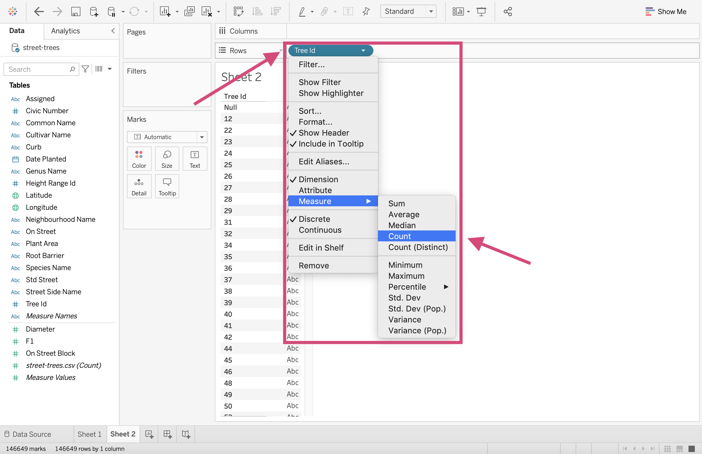{kind=link}
3. We can now add the stacking part of this bar chart by dragging Root Barrier to the Color icon in the Marks card.
{kind=link}
4. Let’s transpose this graph so it’s a little clearer by clicking the Swap Rows and Columns icon in the toolbar.

Great! Here is our stacked bar chart!
{kind=link}
2.1.3. Side-by-Side Bars¶
Still maybe not the right plot for this question. Let’s go with a barplot with the categories side-by-side.
Step by Step Instructions
1. Drag the Root Barrier field to the Columns shelf.

2. Drag the Tree Id field to the Rows shelf again.

You may have to indicate that want to Add All Members
{kind=link}
3. Convert the Tree Id field to a Count Measure by right-clicking and selecting the appropriate measure.

4. Let’s add a little bit of colour to this plot. This isn’t a necessary step, however, we are doing this for consistency to compare to the last three charts.

Now that we’ve done that, which plot out of the pie, stacked bars and side-by-side plot do you most prefer?

2.1.4. Scatter Plot¶
With this particular data source, we don’t really have 2 good continuous numeric columns. To demonstrate how to make a scatter plot, we are going to use what we have and make the best of it.
Let’s plot and see if there is a relationship between the diameter of the trees’ trunks and their height.
Step by Step Instructions
1. First, let’s convert the Height Range Id column to a Measure. We can do this by right-clicking on it and selecting Measure.
{kind=link}
2. Drag the newly transformed Height Range Id measure to the Columns shelf. Note that this is going to change it to a SUM aggregate. This is ok because we will be summing over the values of Tree ID and thankfully this is a unique column!
{kind=link}
3. Next drag the Diameter Measure to the Rows shelf. This will again transform into an aggregate SUM.

This only gives us a single point. We need to split it up so we have a point for each tree.
4. Dragging Tree Id to the Details icon in Marks Card will cause another popup window where we can “Add all members”.
{kind=link}
5. We then can change the mark type to a Circle…

6. …And decrease the point size.
{kind=link}
Great!

2.1.5. Line Graph¶
We are now interested in answering the question How many trees were planted over the years?
Before you start, let’s make a new worksheet.
Step by Step Instructions
1. Drag the Date Planted field to the Columns shelve and the tree Id field to the Rows shelf.

2.\ We are again interested in the number of trees planted at selected dates so once again, we want to transform this field to a Count Measure.

3. Since Date Planted is a continuous variable, it’s a good idea to right-click and transform this field into a Continuous Dimension.

4. This automatically generates the number of trees planted each year (but there are null values!)

4. We can change the YEAR(Date Planted) field to:
MONTH(Date Panted)(top month choice when right-clicking) - which aggregates months together for all years.
{kind=link}
{kind=link}
MONTH(Date Panted)(Bottom month choice when right-clicking) - which will make a sequential plot.


We are going to stick with the year dimension though!


5. We can add a circle for clarity at each year as part of our line graph by dragging a second Tree Id field to the Rows shelf.
{kind=link}
Warning
You may get a popup warning when you do this where I specify Add All Members since we are converting it to a COUNT measure after this.
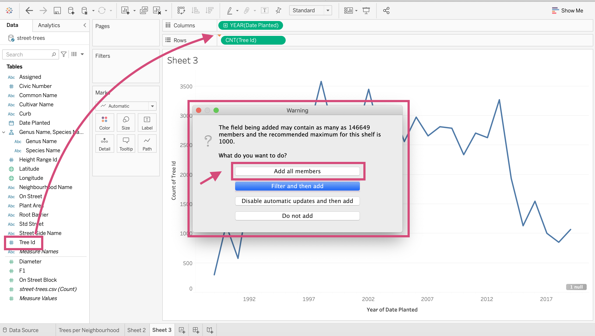{kind=link}
6. We need to make sure we also convert it to a Count measure.

At first, we should get 2 graphs on top of each other.
{kind=link}
7. We can right-click one of them and select “Dual Axis”.
{kind=link}
This will superimpose one on another with a left and a right axis title.

8. We can hide the one on the right by right-clicking the axis and unticking the “Show Header” option.
{kind=link}

9. In the Marks card, select the `CNT(Tree Id)(2), and from the dropdown, select circle.
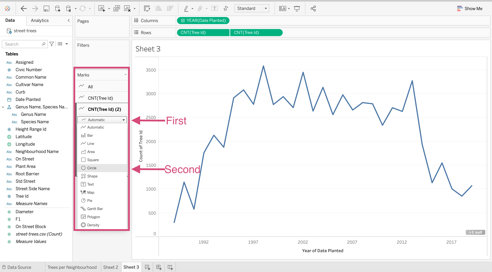{kind=link}
Now we have a line plot with points!

10. To change the colour of the line and the points, we need to make sure we change the colour of both measures by selecting the “All” tab under the “Marks” card on the right.
{kind=link}
11. Don’t forget to give it a title and edit the y-axis label as we did before!.
{kind=link}
2.1.6. Histograms¶
Let’s now start practicing making distributions. Tableau doesn’t easily facilitate density plots, so we are going to stick with learning how to make histograms.
Perhaps we are interested in the distribution of tree trunk diameter length. Remember histograms are used to visualize the distribution of a numeric continuous variable.
Step by Step Instructions
1. First, drag the Diameter Measure to the Columns shelf
{kind=link}
2. You can then go to the Show Me menu and click on the Histogram option. Tableau will then assign the correct measures to the shelves and cards.
{kind=link}
3. And there you have a histogram! Now, this already seems a little problematic because we didn’t choose the bin size and clearly our distribution is skewed.
{kind=link}
It might also be helpful to see this distribution shape without the outliers on the far right and with different bin size.
The majority of the data looks like it’s between 0-50 so let’s make the bin size 2 and limit the axis to 0-50.
4. You’ll notice that Tableau’s been kind and has actually made us a new continuous dimension named Diameter (bin). Right-click on this new field and click on Edit from the dropdown menus.
This is where we are going to change the bin size.
{kind=link}
5. This will result in a popup window where we can change the size of the bins. Let’s go ahead and change it to 2. Remember bin size can cause bias in your plots so be careful when choosing this value. Click OK.
{kind=link}
6. Now we can see that our bars are a lot thinner (If only exercising was this easy).
{kind=link}
7. Let’s fix the axis range now. You’ll not have to do this often but for this particular problem and question, removing the outliers could give us a bit of a clearer distribution shape.
Right-click the axis we want to limit and from the dropdown click Edit Axis….
{kind=link}
8. From the popup, select a Fixed Range and Fixed end at 50 for this plot.

Great!
9. We Are going to go one step forward and change the tick mark intervals too. Click on the Tick Marks option at the top of the popup window.
{kind=link}
10. We can decrease the tick interval to 2 to help make our bar values easier to identify.
{kind=link}
And we did it!
{kind=link}
We now can see that the majority of trees in Vancouver have a diameter between 2 and 3 cms. We also see that it’s very skewed to the right.
2.1.7. Boxplot¶
Although there is an option to make boxplots using the Show Me menu, I find that it can often plot things differently than how I want them to. These are the steps I generally take.
Suppose that we want to see if the difference between the distributions of trunk diameter between trees planted with root barriers and without root barriers.
Step by Step Instructions
1. Begin by dragging Root Barrier to the Columns shelf.
{kind=link}
2. Next, you’ll want to drag the Diameter field to the Rows shelf. You’ll have a beautiful bar plot now measuring the sum of all the trees diameters for each barrier type.
{kind=link}
3. Since we want individual observations for each tree (somewhat), we need to drag the Tree Id field to the Detail icon in the Marks card. This will populate the message where we indicate that we want to ** Add all members**.
{kind=link}
4. Let’s change the mark. Convert the mark from Automatic to Circle.
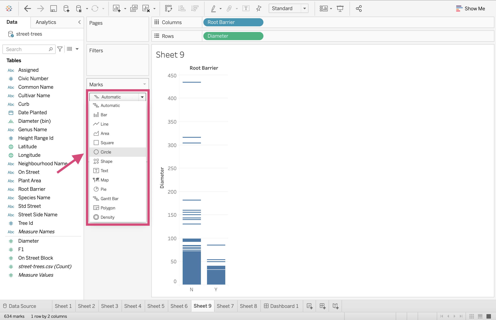{kind=link}
This will produce a circle for each tree now.
5. This is where we make the box part of our boxplot! Right-click on the axis with the continuous variable - in our case, that’s Diameter. Select the Add Reference Line option.
{kind=link}
6. When we select this option, a popup with many different option tabs displays. We want the Boxplot tab!
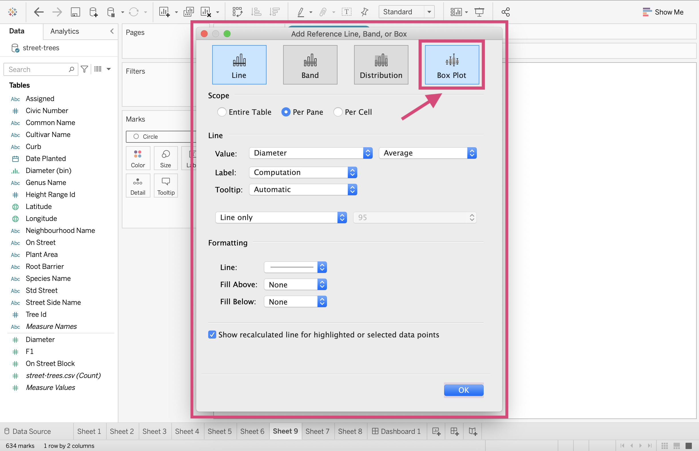{kind=link}
7. Here we want to “Hide the underlying marks (except outliers)”. The reason we are hiding them, in this case, is because we have THOUSANDS of them! If our dataset was smaller, it might be a good idea to show all the underlying marks.
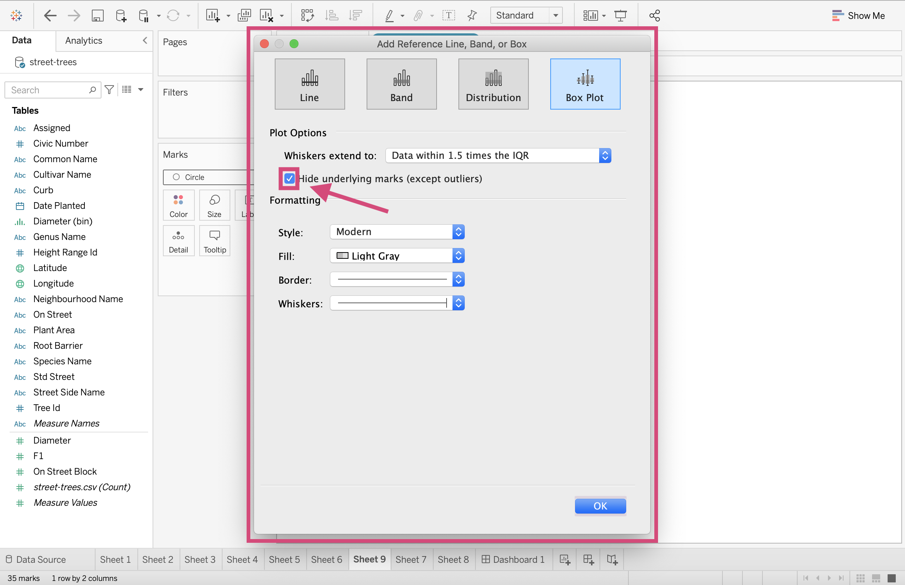{kind=link}
8. We can also change the colour of the box Fill to a green palette which goes nicely with our tree theme.
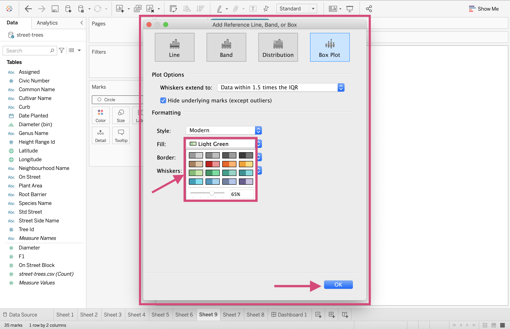{kind=link}
We can now leave this popup screen by clicking OK.
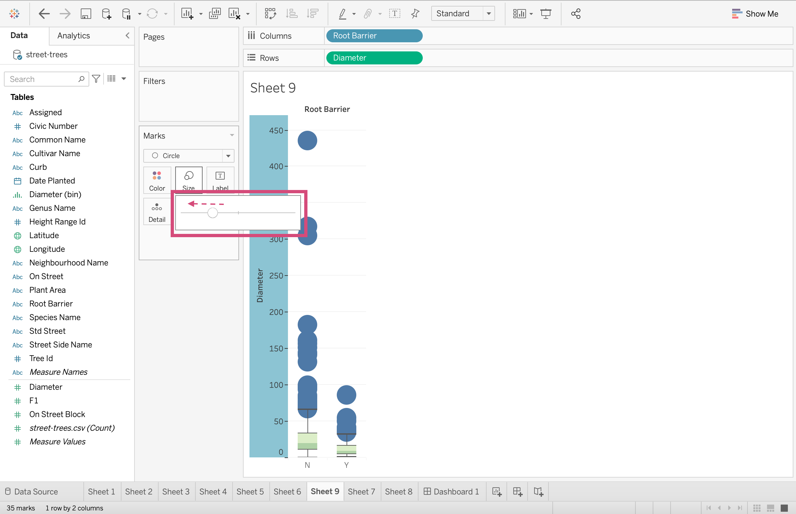{kind=link}
9. Ok, so our outlying observations are rather large right now. Let’s decrease the size.
{kind=link}
Ahh, that’s a bit cleaner.
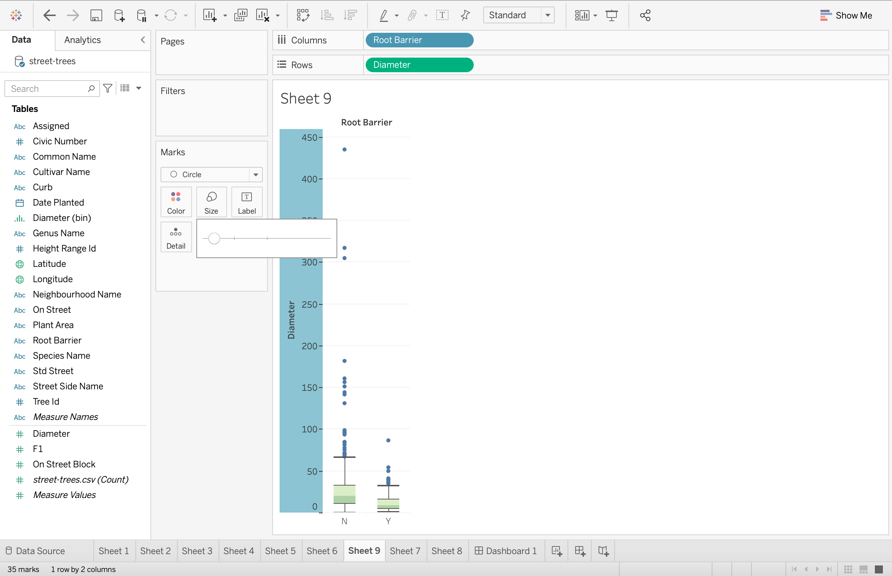{kind=link}
10. We can also change the points to a green colour to go with the rest of the plot. This can be done by clicking the Color icon.
{kind=link}
11. This is a completed boxplot! One thing you can do to get a better idea of the distributions is to transpose it.
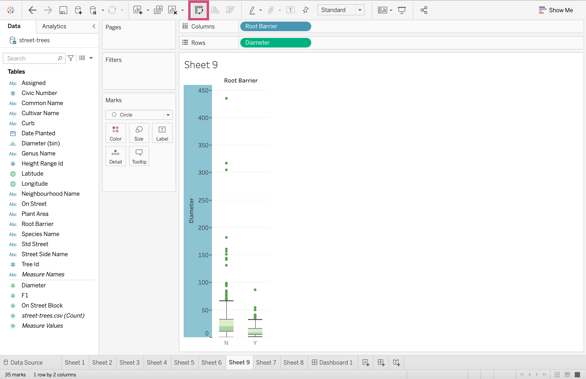{kind=link}
Ahh, beautiful!
{kind=link}
Tip!
When you have multiple boxplots and you want to sort them in some order, using the sorting buttons in the toolbar won’t quite sort them properly or may not sort them how you are intending them to.
The best way to sort your boxplots to some criteria is as follows:
1. Click on the dimension field - here it’s our Root Barrier column and from the dropdown select Sort…
{kind=link}
2. This will produce a popup window where we selected a Nested option to sort our data by.
{kind=link}
3. We can select if we want the field to be sorted in Ascending or Descending order and then choose an Aggregation. Here we are going to be selecting Median which is the center line of our boxes in the boxplot.
{kind=link}
2.1.8. Heatmap¶
Let’s see what the joint distribution is for the presence of a curb and if the tree has root barriers or not.
This will need a heat map or a heat map with a size channel. let’s explore the former first.
Step by Step Instructions
1. Drag the Root Barrier to the Columns shelf- here we will first drag the Root Barrier column.
{kind=link}
2. We then can drag our second discrete dimension to the Rows shelf. We will drag the Crub column.
{kind=link}
3. To add a count field, we will drag the Tree Id to the Detail icon in the Marks card. As we have done before, we “Add all members” when prompted by the popup.
{kind=link}
4. We now transform this field to a Count Measure by right-clicking and selecting it from the drop-down.
{kind=link}
{kind=link}
5. Although we already have square marks, let solidify it and convert the Automatic mark to a Square mark. This is to make sure nothing is transformed when we add additional fields to our graph.
{kind=link}
6. We can include a value in each quadrant by dragging the Tree Id to the Label mark.
{kind=link}
7. We then must convert it to a Count Measure by right-clicking and selecting it accordingly.
{kind=link}
Nice!
{kind=link}
2.1.9. Heatmap with Size Channel¶
If we also want to include an area channel in the plot, we can continue from the steps of the heatmap.
1. Here we will add all the counts of the trees by dragging the Tree Id to the Size icon.
{kind=link}
2. As we have seen many times before we transform the dimension to a Count Measure by clicking and selecting from the dropdown menu.
{kind=link}
{kind=link}
9. The labels seem to ruin the esthetics of this plot, so let’s remove this from the plot by right-clicking and selecting Remove.
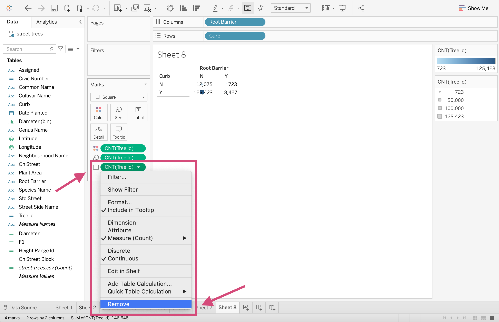{kind=link}
That’s better. Nice job!

2.2. Quick Quiz¶
True or False: Sorting a boxplot can be done by using the sort buttons on the toolbar.
True or False: Histograms can be made with a click from the Show Me window.
What column type are the fields used in the Columns and Rows shelf - Continuous or discrete?
Which of the following fields acts as a hierarchy by default
Row Id,Date Issued,Gender,Latitude?What mark shape is needed for a heatmap?
2.3. Dashboards¶
The moment we’ve all been waiting for! This is where we can take our visualizations from our worksheets, combine them into 1 page (or multiple) and add filters making them dynamic in nature.
Let’s begin by creating a new Dashboard.
1. Click on the Dashboard icon at the bottom of your workspace.

{kind=link}
Here we can displays images, worksheets, filters and even website pages.
2.3.1. Workspace¶
Here we can examine the buttons are tools we will need to create our dashboards.

Size
It’s important that you select the size of the screen your dashboard is expected to be displayed on. The options are:
Fixed: The dashboard remains the same size no matter the screen used to display it. If the dashboard is bigger than the designated window, the dashboard will be scrollable.
Range: The dashboard scales between minimum and maximum sizes that you specify.
Automatic - This is what I generally suggest since the dashboard will automatically resize to fit the screen it’s display on. When using Automatic I also firmly suggest using a Tiled dashboard layout (explained below).


Sheets
Here is where we can select the plots we made on the worksheets and bring them together collectively on a dashboard.
All we have to do, is drag the sheet to the visualization space.


Tiled/Floating
2.3.1.1. Tiled example¶
You’ll notice that when we dragged these sheet they snapped into a position. This is creating tiles. I only recommend using this layout method when using the Automatic sizing option.

2.3.1.2. Floating example¶
If we instead used the floating option, we could place the plot anywhere but it can prove problematic when the screen size is fixed.

Objects
We are not restricted to only putting worksheets and graphs on our dashboard. We can also add images, webpages inbedded in the sheets as well as Text boxes, downloading and navigation button options.
2.3.1.3. images¶
We can place images in our dashboards just as easily as we cant sheets.
Step by Step Instructions
1. We first drag the Image option where we wish to place it in the dashboard.
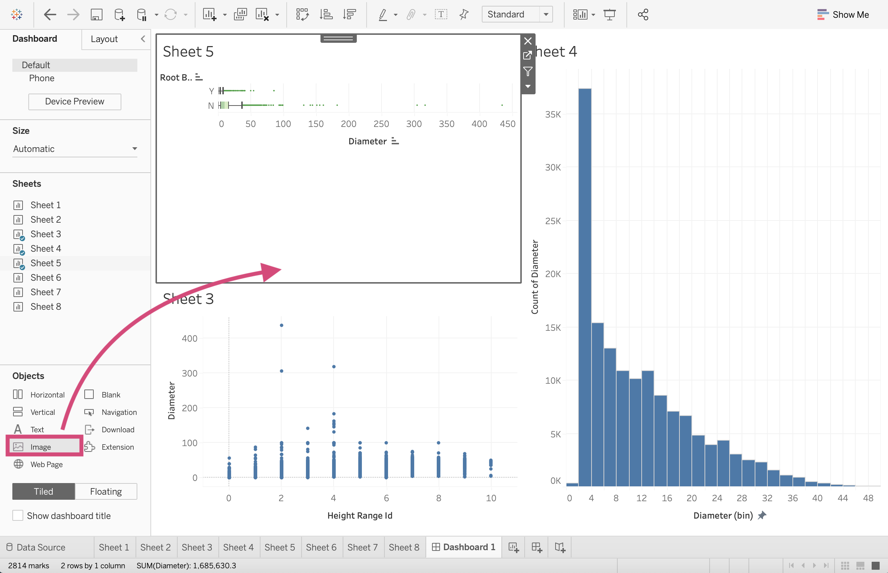{kind=link}
2. We then must select our desired images from our file directory, here I’m using the trees.png file which I’ve also made available on the Google drive here.

3. I select the Fit Image option so that the image is fix to the dimension of the dashboard tile.
{kind=link}
And there you have it!

2.3.1.4. webpage¶
We can even embed complete working websites in our dashboards.
Step by Step Instructions
1. We drag the Web Page option to the dashboard and it will result in a popup asking for the desired page.

And it’s as simple of that! We have the website active now!

2.3.1.5. Text¶
Adding text for titles or explanations (I’ve even added axis titles using this option when in a pinch) works the same as images and webpages. We can drag and then format our text.


2.3.1.6. Download¶
To create an option to download a static copy of your dashboard, you can add a button allowing the viewer to do so.
Step by Step Instructions
1. Like the other object, we drag the Download icon to the dashboard.

2. To format it, we need to double click and select the desired export or button type and format the font.
{kind=link}
3. We can also adjust the background colour.


{kind=link}
{kind=link}
2.3.1.8. Extensions¶
For certain additional actions and features we can also add extensions that other people have made and shared publicly.
We will discuss this in the 4th lesson if we have time.
Device Preview
You can check and preview what your dashboard will look for other devices by clicking this Device Preview and scrolling through the options like Desktop, Tablet and Phone
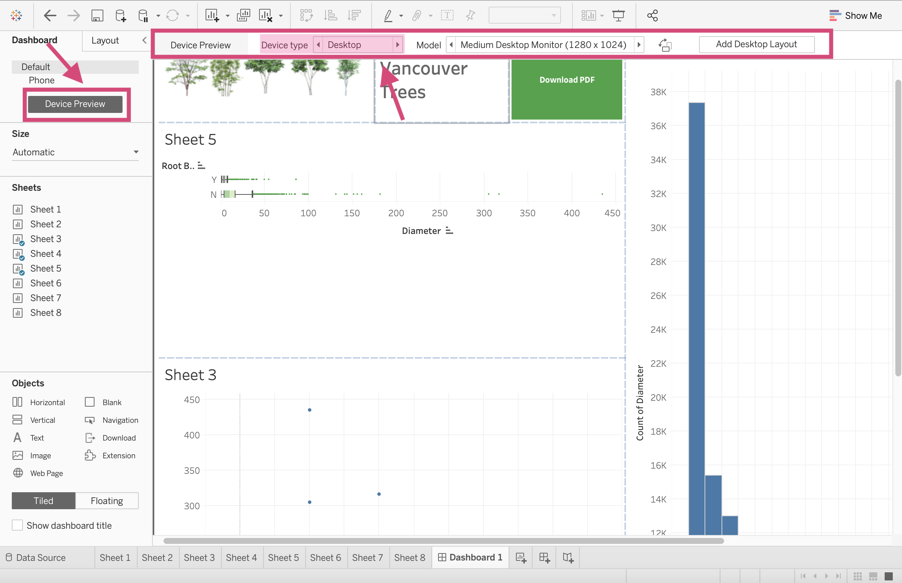{kind=link}

{kind=link}
2.4. Filtering¶
Here is where the fun starts! Since Tableau is an excellent tool to use for dynamic plots, let’s go ahead and see why first hand.
Step by Step Instructions
1. Click on the sheet you wish to filter. On the right side of the plot you’ll see a More Options button.

This will produce a dropdown where we want to select a field to filter on. Under Filters we can then select the columns displayed. These are currently the ones we are using in the plot already. We will show you how to filter on additional columns momentarily. For now let’s select Sum of Diameter.

2. Selecting the field desired will then produce a filter!

3.let’s add another. Let’s add the Sum of Height Range Id as a filter too.
{kind=link}
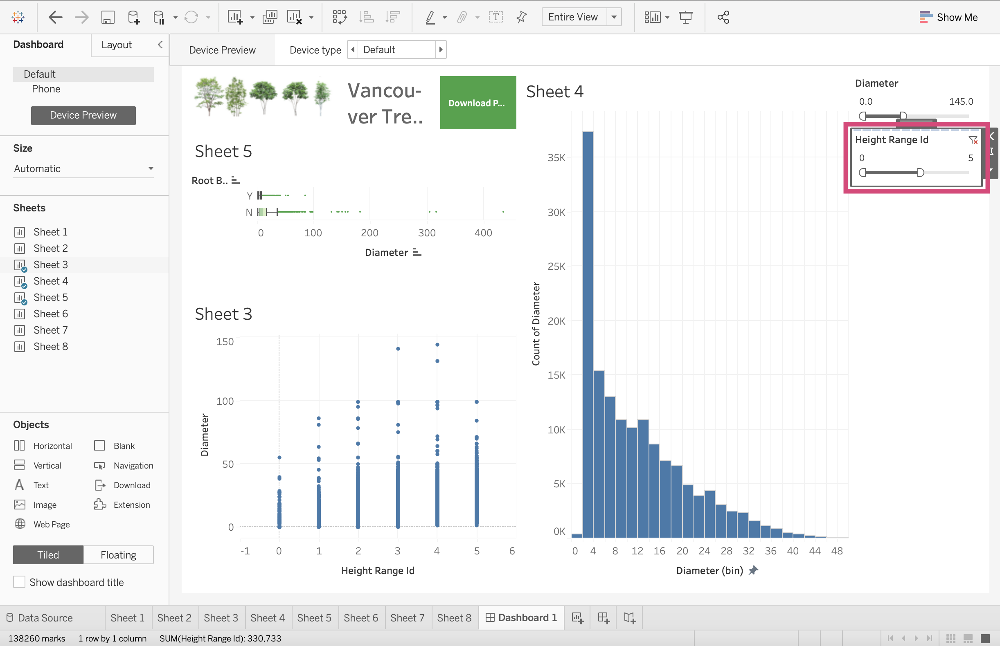
{kind=link}
I’m going to move the plot so that we can focus of the filters and see all the popups here

4. If we click on the filter we can then see a More Options icon.

This is where we can see all the filter style options.
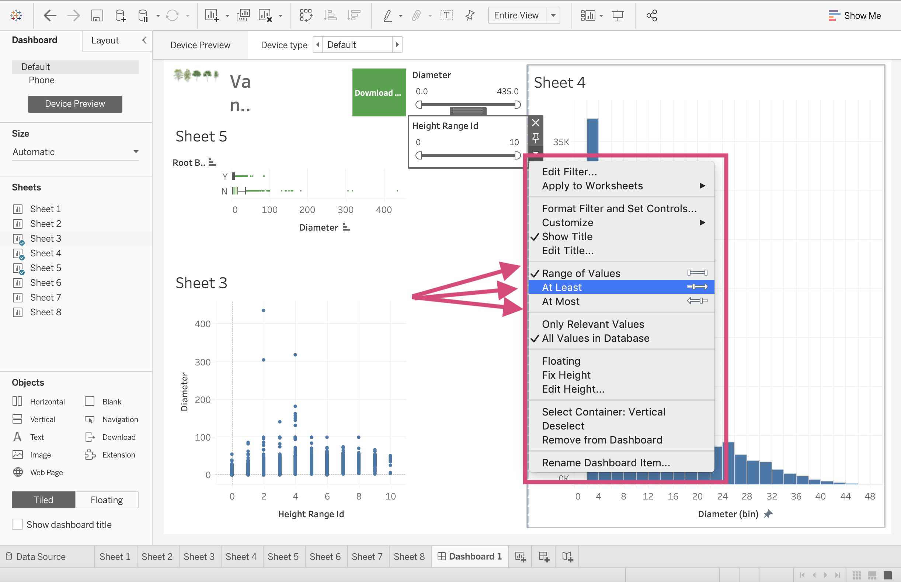{kind=link}
Since both of these fields as measures, we can filters in the following ways:
Range of Values/Dates: This means you can filter the data to include or exclude more values. You can pick the minimum and maximum values.
At Least/Starting Date: This has a fixed maximum value and with an open ended minimum value that the user chooses.
At Most/Ending Date: This has a fix minimum values with an open ended maximum value that the user chooses.
For time periods there are are 2 more called Relative to Now and Browse periods where the values must be continuous.
5. In order to filter the graphs by other columns, we must add it to the Filters card on the Worksheet page of the plot.
Locate yourself to the appropriate sheet using the tab at the bottom. Select the column you wish to filter the plot on and drag it to the Filters card. Here we are going to drag the Neighbourhood Name column.

This will create a pop-up where we can select the categories and values we wish to include. I will be selecting All


6. We can then return to our dashboard, click on the plot and see that Neighbourhood Name has need added to the choice of filters.

This produces a list of all the neighbourhoods now. 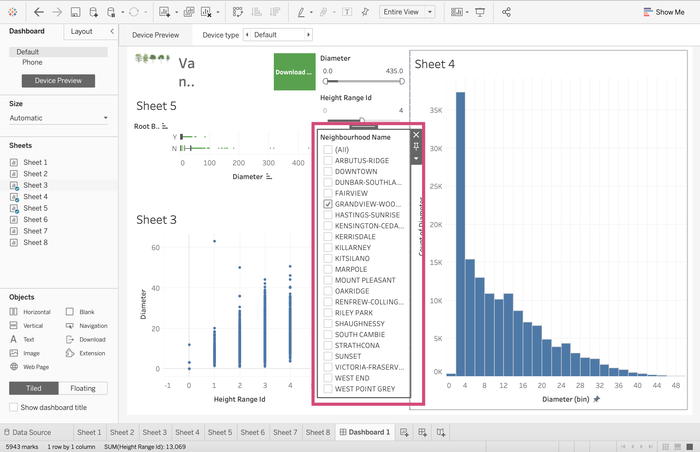
{kind=link}
7. Clicking on this filter and selecting the More Option icon, you’ll see all the different filtering styles.

Neighbourhood Name is a Dimension. Dimensions have the following possible filtering styles (Source: help.tableau.com):
Single Value (List): A full list of all the possible values of the filter as radio buttons but only 1 can be selected at a time.
Multiple Values (List): Shows all the values in the filter as a list of check boxes where multiple values can be selected.
Single Value (Dropdown): Displays the values of the filter in a drop-down list where only a single value can be selected at a time.
Multiple Values(Dropdown): Displays the values of the filter in a drop-down list where multiple values can be selected.
Single Value (Slider): Displays the values of the filter along the range of a slider. Only a single value can be selected at a time. This option is useful for dimensions that have an implicit order such as dates.
Multiple Values (Custom List): Displays a text box where you can type a few characters and search for the value.
Wildcard Match: Displays a text box where you can type a few characters. All values that match those characters are automatically selected.
We are going to select the Multiple Values(Dropdown)

2.4.1. Filter All Sheets¶
2.4.2. Plots as filters¶
2.5. Publishing data sources¶
2.6. Quick Quiz¶
True or False: Using the same data, a histogram’s shape can change depending on the bin size.
True or False: When we are visualizing data from a single column, we are (usually) more interested in the shape/distribution in general, than individual points.
What does the middle line of a box plot represent?
Which visualization type can show multiple summary statistics of data as well as their distributions?
What is another name for a density plot?
What plot type is most appropriate if we are interested in visualizing the relationship between two numeric/quantitative columns?